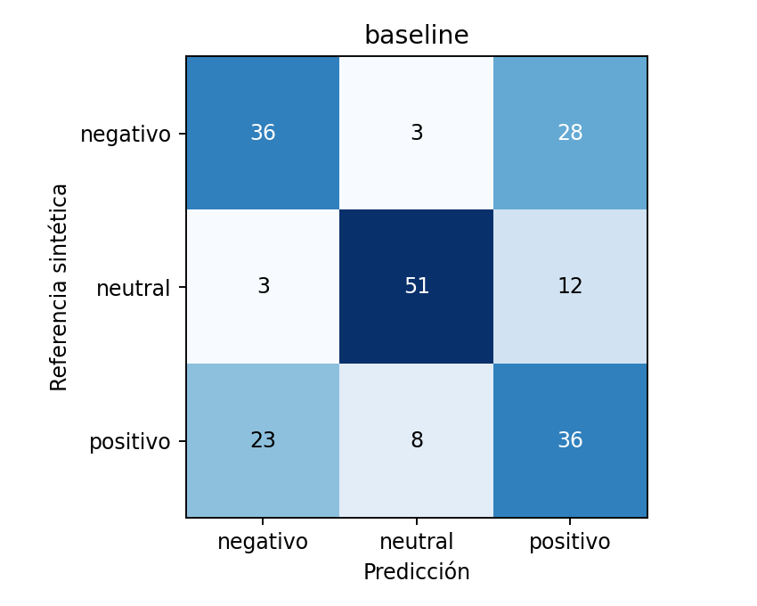
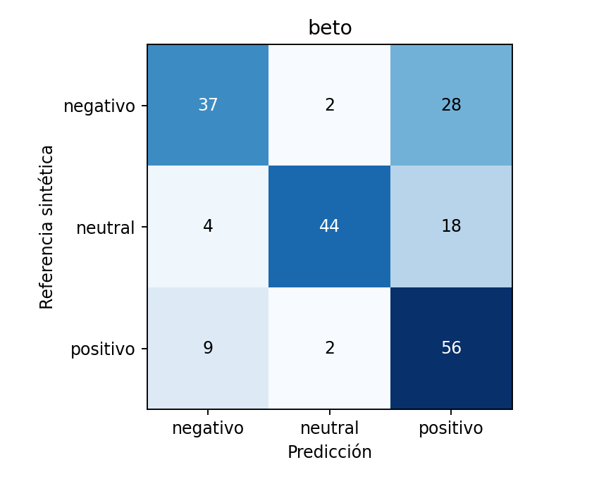

Elvis Max Estela Paucar · T6 · Grupo A
Corpus sintético de prueba. No valida pacientes reales. BETO: ejecutado
Accuracy 0.6150 · Macro-F1 0.6195
| precision | recall | f1-score | support | |
|---|---|---|---|---|
| negativo | 0.5806 | 0.5373 | 0.5581 | 67.000 |
| neutral | 0.8226 | 0.7727 | 0.7969 | 66.000 |
| positivo | 0.4737 | 0.5373 | 0.5035 | 67.000 |
| accuracy | 0.6150 | 0.6150 | 0.6150 | 0.615 |
| macro avg | 0.6256 | 0.6158 | 0.6195 | 200.000 |
| weighted avg | 0.6247 | 0.6150 | 0.6186 | 200.000 |

Accuracy 0.6850 · Macro-F1 0.6890
| precision | recall | f1-score | support | |
|---|---|---|---|---|
| negativo | 0.7400 | 0.5522 | 0.6325 | 67.000 |
| neutral | 0.9167 | 0.6667 | 0.7719 | 66.000 |
| positivo | 0.5490 | 0.8358 | 0.6627 | 67.000 |
| accuracy | 0.6850 | 0.6850 | 0.6850 | 0.685 |
| macro avg | 0.7352 | 0.6849 | 0.6890 | 200.000 |
| weighted avg | 0.7343 | 0.6850 | 0.6886 | 200.000 |

{
"delta_f1": 0.06953977071697848,
"ic95_grupos": [
-0.014031875332390406,
0.1604974035730237
],
"replicas": 1000,
"mcnemar_p": 0.16544051293398976,
"b": 37,
"c": 51,
"limite": "Sintético. McNemar supone independencia entre casos; no garantizada. No prueba eficacia clínica."
}Las etiquetas no tienen validación humana. Puede persistir semejanza entre plantillas.